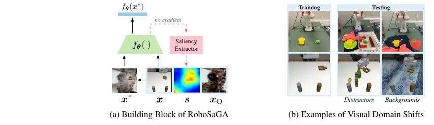
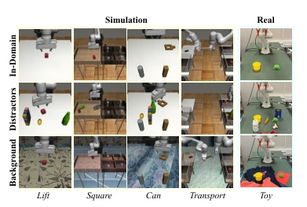
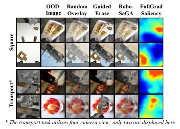
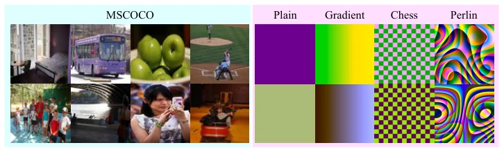
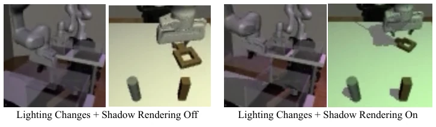
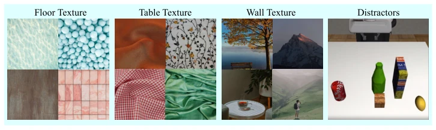
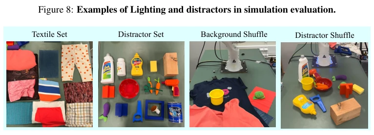
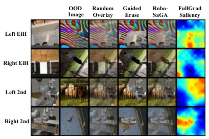
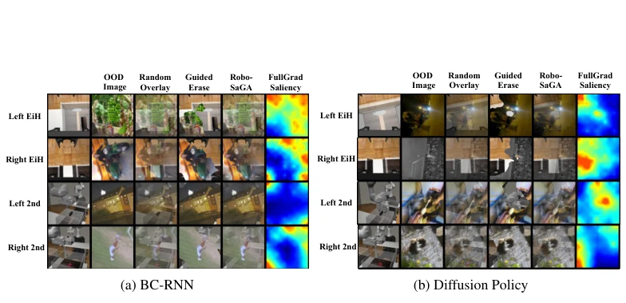

This paper injects a strong shot of vitality into the visual robustness of Behavior Cloning (BC), but the prescription is somewhat "expensive". The authors keenly point out that traditional random cropping and color jittering are essentially "running naked" when dealing with domain shifts such as shadows and distractors, while existing superimposition-based augmentation methods are prone to accidentally harming task-critical semantics. RoboSaGA attempts to use "saliency (significance)" as a shrewd steward, handling loosely where it should be handled, and holding firm where it must be protected. Although it indeed suppresses the Performance Gap to an extremely low level in both simulation and real robots, even making Diffusion Policy appear more stable, one cannot help but remark: the computational overhead increased by 1.5 times, and a saliency buffer with significant memory occupancy must be maintained. For edge robots with limited computing power, is this "actuarial" price a bit too high? However, elevating the effect of superimposition augmentation from "random random pasting" to "customized on demand", this idea is indeed much stronger than those baselines that only tune parameters, at least proving that in BC, not all pixels should be treated equally.
Visual-based Behavior Cloning (BC) has made significant progress in converting expert demonstrations into robot skills, but the high cost of real-world data collection leads to datasets often prioritizing task variability over visual diversity, making the model's generalization ability extremely poor when facing visual domain shifts (VDS) such as lighting, shadows, distractors, and background changes [5, 6]. Existing traditional augmentation methods, such as Random Crop and Colour Jitter, although they can improve in-domain performance, often fall short when handling large-scale domain shifts, especially with significant performance drops in shadow and distractor scenarios [7, 8]. On the other hand, although superimposition-based augmentation methods popular in the computer vision field (such as Mixup, Cutout, etc.) are effective, directly applying them to BC poses risks: they may destroy task-critical semantics, spatio-temporal relationships, or agent-object interactions [9, 10, 11]. For example, simple random superimposition may obscure key objects, while saliency methods based on classification logits (such as KeepAugment) struggle to adapt to multimodal, multi-view BC tasks [15]. Therefore, there is an urgent need for an augmentation strategy that can both utilize out-of-domain image augmentation robustness and precisely protect task-critical regions without modifying the network structure.

Figure 1: RoboSaGA’s core components and the broadened visual domains. (a) Saliency map s, derived from visual feature output fθ(x), guides the overlaying of in-domain and the OOD image xO to create the augmented image x∗for training. (b) Examples of training and tested VDS scenarios.
方法Method
RoboSaGA 提出了一种基于显著性引导的叠加增强框架，其核心在于利用策略驱动的显著性图动态调整每个像素的增强强度。整体流程分为显著性提取、显著性裁剪、全局显著性缓冲区和数据增强四个阶段。首先，在显著性提取阶段，方法摒弃了传统的分类logits梯度，转而采用FullGrad算法，从视觉特征输出层反向传播全梯度，生成更锐利、准确的显著性图，以捕捉任务相关的视觉特征 [22]。其次，为了平衡增强强度与任务保护，引入了显著性裁剪机制，将归一化后的显著性分数限制在阈值λ（如0.8）以内，确保关键区域不会被完全覆盖，同时允许对非关键区域进行适度增强。为了降低FullGrad带来的计算开销，RoboSaGA 设计了一个全局显著性缓冲区（Global Saliency Buffer），该缓冲区以低分辨率、8位单通道格式存储历史显著性图，并采用延迟更新策略（仅更新部分轨迹），在几乎不损失性能的前提下大幅减少了计算时间。最后，在数据增强阶段，算法从缓冲区检索显著性图作为混合矩阵M，将域内图像x与域外图像xO进行逐像素加权叠加（x* = M ⊙ x + (1-M) ⊙ xO），其中M由显著性图决定。这种方法允许在任务无关区域（如背景）进行激进增强，而在任务关键区域（如机械臂末端、目标物体）保持原貌，且无需引入额外的学习模块或损失函数，可无缝集成到BC-MLP、BC-RNN及Diffusion Policy等现有架构中。
RoboSaGA proposes a saliency-guided superimposition augmentation framework, the core of which lies in using policy-driven saliency maps to dynamically adjust the augmentation intensity of each pixel. The overall process is divided into four stages: saliency extraction, saliency cropping, global saliency buffer, and data augmentation. First, in the saliency extraction stage, the method abandons traditional classification logits gradients and instead adopts the FullGrad algorithm, backpropagating full gradients from the visual feature output layer to generate sharper and more accurate saliency maps to capture task-relevant visual features [22]. Second, to balance augmentation intensity and task protection, a saliency cropping mechanism is introduced, limiting the normalized saliency scores within a threshold λ (e.g., 0.8), ensuring key regions are not completely covered, while allowing moderate augmentation for non-key regions. To reduce the computational overhead brought by FullGrad, RoboSaGA designs a Global Saliency Buffer, which stores historical saliency maps in low-resolution, 8-bit single-channel format, and adopts a lazy update strategy (updating only partial trajectories), significantly reducing computation time with almost no performance loss. Finally, in the data augmentation stage, the algorithm retrieves saliency maps from the buffer as a mixing matrix M, performing pixel-wise weighted superimposition between in-domain image x and out-of-domain image xO (x* = M ⊙ x + (1-M) ⊙ xO), where M is determined by the saliency map. This method allows aggressive augmentation in task-irrelevant regions (such as backgrounds), while maintaining the original appearance in task-critical regions (such as robot arm end-effectors, target objects), without introducing additional learning modules or loss functions, and can be seamlessly integrated into existing architectures such as BC-MLP, BC-RNN, and Diffusion Policy.
Researchers conducted extensive evaluations in the Robomimic simulation environment (Lift, Square, Can, Transport tasks) and the real world (Toy task), comparing Random Crop, Colour Jitter, Random Overlay, SODA, and RoboSaGA. The evaluation metric is Performance Gap (In-domain success rate minus success rate under VDS). Results show that traditional methods perform poorly under shadows and distractors, while RoboSaGA significantly outperforms all baselines. In simulation, RoboSaGA reduced the Performance Gap from 0.24 of Random Overlay to 0.14; in the real world, the gap further dropped from 0.18 to 0.05, with a relative improvement of up to 72%. Ablation studies show that RoboSaGA combines the advantages of "guided erasure" and "random superimposition", being more effective than single strategies. Additionally, experiments found subtle deviations between saliency maps and human intuition, attributed to the BC model's dependence on multimodal inputs and historical information. Although computational overhead has increased, RoboSaGA greatly improves the model's robustness to lighting, shadows, distractors, and background changes while maintaining in-domain performance, proving its effectiveness.

Figure 2: Experiment environment setups.

Figure 3: Augmentation with BC-MLP.Figure 5: Saliency Maps across Two Views during different stages of task execution (BC-RNN).

Figure 6: Examples of out-of-domain images for data augmentation

Figure 7: Examples of lighting and shadow variations in simulation evaluation.

Figure 8: Examples of Lighting and distractors in simulation evaluation.

Figure 9: Examples of textiles and distractors in real-world evaluation.

Figure 10: Examples of Saliency Visualisations and Data Augmentations of Transport Task from BC-MLP. EiH: eye-in-hand camera. 2nd: second-person-camera
其他图片Other Figures

Figure 11: Examples of Saliency Visualisations and Data Augmentations of Transport Task from BC-RNN and Diffusion Policy. EiH: eye-in-hand camera. 2nd: second-person-camera